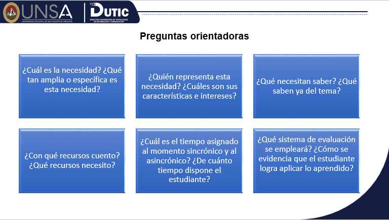

En esta fase, el docente recoge información del alumnado y del entorno para la planificación y la propuesta del curso. Asimismo, realiza un análisis de las variables externas (amenazas y riesgos) que podrían afectar el desarrollo del programa.
ADDIE
Análisis

Obra publicada con Licencia Creative Commons Reconocimiento Compartir igual 4.0